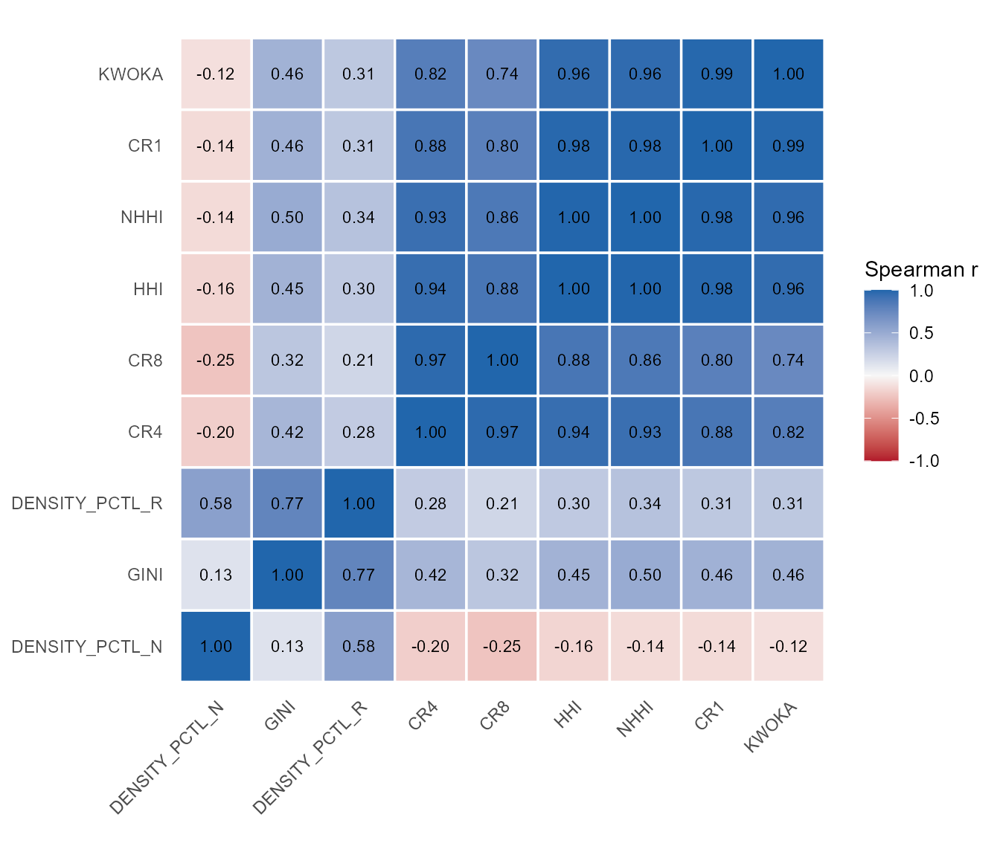
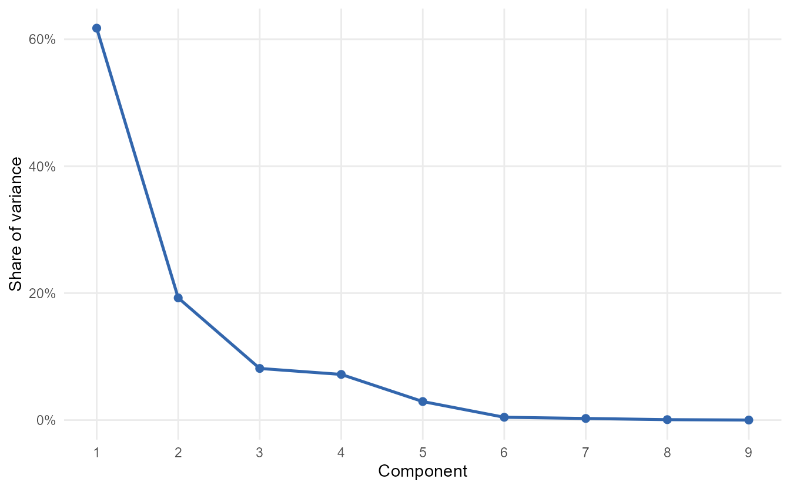
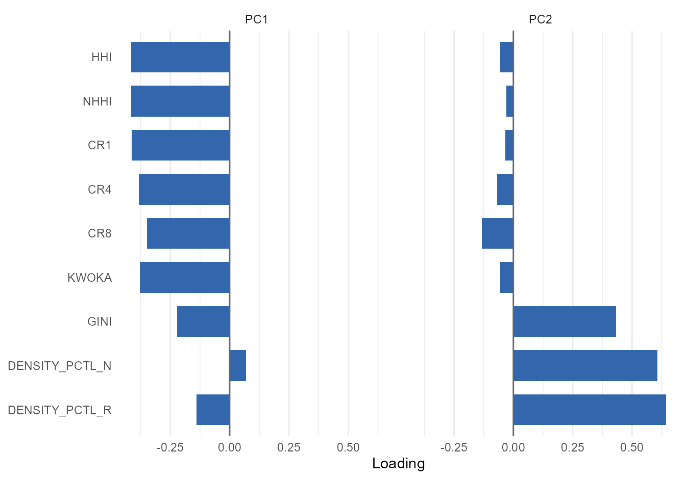
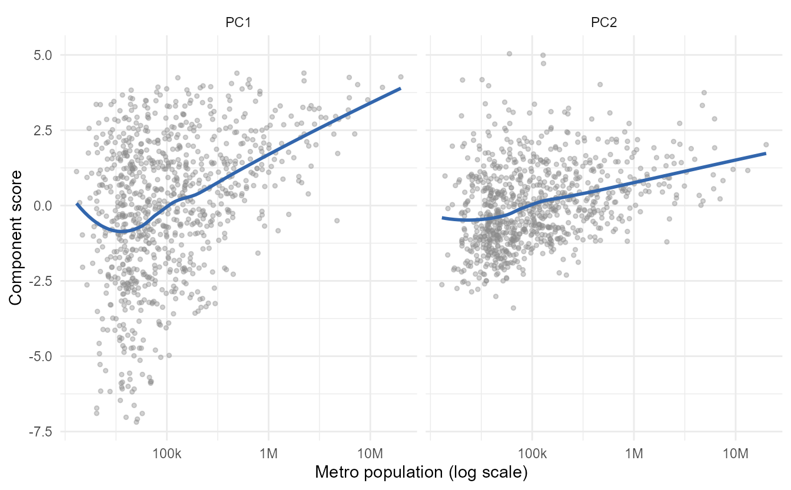

How the metrics relate: correlation, PCA and factor analysis
Source:vignettes/metric-correlations.Rmd
metric-correlations.Rmdnpcompete computes a dozen measures of market structure. Several of them are close variants of each other, so a natural question is how many distinct things they measure. This page looks at the correlations among the metrics across US metro areas and then reduces them with principal components and factor analysis.
library( npcompete )
library( ggplot2 )
# NTMAJ12 labels for the NTEEV2 major groups
ntmaj12 <- c( ART = "Arts", EDU = "Education",
ENV = "Environment", HEL = "Health",
HMS = "Human services", IFA = "International",
PSB = "Public benefit", REL = "Religion",
MMB = "Mutual benefit", UNI = "Universities",
HOS = "Hospitals", UNU = "Unknown" )Data
cbsa_metrics holds every metric for every US metro and
micro area (CBSA) in 2019, by NTEE major group, measured on total
revenue. Start with the all-subsector rows, one per metro. Markets with
very few organizations are dropped because their metrics are pinned at
the bounds (CRk = 1 when
,
every index = 1 for a monopoly), which would build correlation in
mechanically.
metrics <- c( "HHI", "NHHI", "CR1", "CR4", "CR8", "KWOKA", "GINI",
"DENSITY_PCTL_N", "DENSITY_PCTL_R" )
metros <- subset( cbsa_metrics, SUB == "ALL" & N >= 10 & !is.na( POP ) )
metros <- metros[ complete.cases( metros[ metrics ] ), ]
X <- metros[ metrics ]
nrow( X )
#> [1] 873Correlations
Spearman (rank) correlations, which are not driven by the long tails of the concentration measures:
| HHI | NHHI | CR1 | CR4 | CR8 | KWOKA | GINI | DENSITY_PCTL_N | DENSITY_PCTL_R | |
|---|---|---|---|---|---|---|---|---|---|
| HHI | 1.00 | 1.00 | 0.98 | 0.94 | 0.88 | 0.96 | 0.45 | -0.16 | 0.30 |
| NHHI | 1.00 | 1.00 | 0.98 | 0.93 | 0.86 | 0.96 | 0.50 | -0.14 | 0.34 |
| CR1 | 0.98 | 0.98 | 1.00 | 0.88 | 0.80 | 0.99 | 0.46 | -0.14 | 0.31 |
| CR4 | 0.94 | 0.93 | 0.88 | 1.00 | 0.97 | 0.82 | 0.42 | -0.20 | 0.28 |
| CR8 | 0.88 | 0.86 | 0.80 | 0.97 | 1.00 | 0.74 | 0.32 | -0.25 | 0.21 |
| KWOKA | 0.96 | 0.96 | 0.99 | 0.82 | 0.74 | 1.00 | 0.46 | -0.12 | 0.31 |
| GINI | 0.45 | 0.50 | 0.46 | 0.42 | 0.32 | 0.46 | 1.00 | 0.13 | 0.77 |
| DENSITY_PCTL_N | -0.16 | -0.14 | -0.14 | -0.20 | -0.25 | -0.12 | 0.13 | 1.00 | 0.58 |
| DENSITY_PCTL_R | 0.30 | 0.34 | 0.31 | 0.28 | 0.21 | 0.31 | 0.77 | 0.58 | 1.00 |
As a heat map, with variables ordered by hierarchical clustering:
ord <- hclust( as.dist( 1 - abs( r ) ) )$order
r_long <- as.data.frame( as.table( r[ ord, ord ] ) )
names( r_long ) <- c( "x", "y", "r" )
ggplot( r_long, aes( x, y, fill = r ) ) +
geom_tile( colour = "white", linewidth = 0.6 ) +
geom_text( aes( label = sprintf( "%.2f", r ) ), size = 3 ) +
scale_fill_gradient2( low = "#b2182b", mid = "grey97", high = "#2166ac",
limits = c( -1, 1 ), name = "Spearman r" ) +
coord_equal() +
labs( x = NULL, y = NULL ) +
theme_minimal() +
theme( axis.text.x = element_text( angle = 45, hjust = 1 ),
panel.grid = element_blank() )
Three groups stand out:
- Concentration: HHI, NHHI, CR1 and the Kwoka index move almost in lockstep. In markets of ten or more organizations HHI and NHHI are nearly the same number, and the leader’s share drives all of them.
- Breadth of the top tier: CR4 and CR8 correlate highly with each other and somewhat less with CR1 and the Kwoka index, since they also count the organizations behind the leader.
- Inequality and density: the Gini correlates only moderately with concentration and is tied more closely to revenue density. Count density is nearly unrelated to concentration.
A few of the pairs plotted:
pairs( X[ c( "HHI", "CR4", "KWOKA", "GINI", "DENSITY_PCTL_N" ) ],
pch = 19, cex = 0.3, col = grDevices::adjustcolor( "grey30", 0.3 ),
gap = 0.3 )Principal components
PCA on the standardized metrics. Each component is a weighted combination of the metrics, chosen to capture as much of the remaining variance as possible.
pca <- prcomp( X, scale. = TRUE )
var_share <- pca$sdev^2 / sum( pca$sdev^2 )
data.frame( component = paste0( "PC", seq_along( var_share ) ),
eigenvalue = pca$sdev^2,
share = var_share,
cumulative = cumsum( var_share ) ) |>
knitr::kable( digits = 3 )| component | eigenvalue | share | cumulative |
|---|---|---|---|
| PC1 | 5.557 | 0.617 | 0.617 |
| PC2 | 1.733 | 0.193 | 0.810 |
| PC3 | 0.732 | 0.081 | 0.891 |
| PC4 | 0.647 | 0.072 | 0.963 |
| PC5 | 0.263 | 0.029 | 0.992 |
| PC6 | 0.040 | 0.004 | 0.997 |
| PC7 | 0.023 | 0.003 | 0.999 |
| PC8 | 0.006 | 0.001 | 1.000 |
| PC9 | 0.000 | 0.000 | 1.000 |
The first component carries more than half of the variance. By the eigenvalue-above-one rule, two components are worth keeping; together they hold about 80% of the variance.
scree <- data.frame( k = seq_along( var_share ), share = var_share )
ggplot( scree, aes( k, share ) ) +
geom_line( colour = "#3266ad", linewidth = 0.9 ) +
geom_point( colour = "#3266ad", size = 2 ) +
scale_x_continuous( breaks = scree$k ) +
scale_y_continuous( labels = scales::label_percent() ) +
labs( x = "Component", y = "Share of variance" ) +
theme_minimal() +
theme( panel.grid.minor = element_blank() )
Loadings on the first three components:
| PC1 | PC2 | PC3 | |
|---|---|---|---|
| HHI | -0.41 | -0.06 | -0.16 |
| NHHI | -0.41 | -0.03 | -0.19 |
| CR1 | -0.41 | -0.03 | -0.08 |
| CR4 | -0.38 | -0.07 | 0.46 |
| CR8 | -0.35 | -0.13 | 0.62 |
| KWOKA | -0.38 | -0.06 | -0.43 |
| GINI | -0.22 | 0.43 | -0.31 |
| DENSITY_PCTL_N | 0.07 | 0.61 | 0.13 |
| DENSITY_PCTL_R | -0.14 | 0.64 | 0.20 |
Plotted, the same three groups appear as in the heat map. The concentration measures all load on PC1 (with a negative sign, so a higher PC1 score means a less concentrated market); the Gini and the two density indices carry PC2.
L <- data.frame( metric = rownames( pca$rotation ), pca$rotation[ , 1:2 ] )
L <- tidyr::pivot_longer( L, c( PC1, PC2 ), names_to = "component",
values_to = "loading" )
L$metric <- factor( L$metric, levels = rev( rownames( pca$rotation ) ) )
ggplot( L, aes( loading, metric ) ) +
geom_col( fill = "#3266ad", width = 0.7 ) +
geom_vline( xintercept = 0, colour = "grey40" ) +
facet_wrap( ~ component ) +
labs( x = "Loading", y = NULL ) +
theme_minimal() +
theme( panel.grid.major.y = element_blank() )
Components and metro size
Metro scores on the first two components, against population. The sign of a component is arbitrary; read it from the loadings.
scores <- data.frame( POP = metros$POP, pca$x[ , 1:2 ] )
scores <- tidyr::pivot_longer( scores, c( PC1, PC2 ),
names_to = "component", values_to = "score" )
ggplot( scores, aes( POP, score ) ) +
geom_point( colour = "grey55", alpha = 0.4, size = 1 ) +
geom_smooth( method = "loess", formula = y ~ x, se = FALSE,
colour = "#3266ad", linewidth = 1 ) +
facet_wrap( ~ component ) +
scale_x_log10( breaks = c( 1e5, 1e6, 1e7 ), labels = c( "100k", "1M", "10M" ) ) +
labs( x = "Metro population (log scale)", y = "Component score" ) +
theme_minimal()
PC1 rises steeply with population: larger metros are less concentrated. PC2 rises more gently, mostly through the Gini, which grows with metro size (see the Gini vignette).
Factor analysis
Factor analysis models the metrics as noisy indicators of a few latent traits. Near-duplicate indicators make the fit unstable, so NHHI (nearly identical to HHI here) and CR1 (nearly identical to the Kwoka index) are left out. The concentration measures are strongly skewed, so the model is fit to the Spearman correlation matrix rather than the raw data.
fa_vars <- c( "HHI", "CR4", "CR8", "KWOKA", "GINI",
"DENSITY_PCTL_N", "DENSITY_PCTL_R" )
r_fa <- cor( X[ fa_vars ], method = "spearman" )
fa2 <- factanal( covmat = r_fa, factors = 2, n.obs = nrow( X ),
rotation = "varimax" )Loadings (blank below 0.3) and uniqueness, the share of each metric’s variance that the factors do not explain:
loading_table <- function( fa ) {
ld <- unclass( fa$loadings )
ld[ abs( ld ) < 0.3 ] <- NA
data.frame( ld, uniqueness = fa$uniquenesses )
}
loading_table( fa2 ) |> knitr::kable( digits = 2 )| Factor1 | Factor2 | uniqueness | |
|---|---|---|---|
| HHI | 0.94 | NA | 0.11 |
| CR4 | 0.99 | NA | 0.00 |
| CR8 | 0.97 | NA | 0.05 |
| KWOKA | 0.82 | NA | 0.31 |
| GINI | 0.37 | 0.71 | 0.36 |
| DENSITY_PCTL_N | NA | 0.64 | 0.53 |
| DENSITY_PCTL_R | NA | 0.97 | 0.00 |
The first factor is concentration: HHI, CR4, CR8 and the Kwoka index all load on it heavily. The second is carried by the two density indices and the Gini, a “depth of the sector” trait: metros with more nonprofit revenue than expected for their size also have more unequal revenue distributions. Count density has the highest uniqueness; it carries information the other metrics do not.
A third factor splits concentration in two, the same split the heat map showed: dominance by the leader (HHI, Kwoka) versus the weight of the top tier as a whole (CR4, CR8).
fa3 <- factanal( covmat = r_fa, factors = 3, n.obs = nrow( X ),
rotation = "varimax" )
loading_table( fa3 ) |> knitr::kable( digits = 2 )| Factor1 | Factor2 | Factor3 | uniqueness | |
|---|---|---|---|---|
| HHI | 0.78 | NA | 0.61 | 0.00 |
| CR4 | 0.94 | NA | 0.33 | 0.00 |
| CR8 | 0.96 | NA | NA | 0.04 |
| KWOKA | 0.59 | NA | 0.79 | 0.02 |
| GINI | 0.30 | 0.71 | NA | 0.35 |
| DENSITY_PCTL_N | NA | 0.64 | NA | 0.53 |
| DENSITY_PCTL_R | NA | 0.98 | NA | 0.00 |
With close to 900 metros the chi-square test of exact fit rejects both models, as it does for almost any model on a sample this large; the loadings are the useful part.
Do the patterns hold within subsectors?
The same correlations inside each subsector, for subsector markets with ten or more organizations:
subs <- subset( cbsa_metrics, SUB != "ALL" & N >= 10 )
subs$NTMAJ12 <- factor( ntmaj12[ subs$SUB ], levels = ntmaj12 )
spearman <- function( a, b ) cor( a, b, method = "spearman", use = "complete.obs" )
subs |>
dplyr::group_by( NTMAJ12 ) |>
dplyr::summarize(
markets = dplyr::n(),
HHI_CR4 = spearman( HHI, CR4 ),
HHI_KWOKA = spearman( HHI, KWOKA ),
HHI_GINI = spearman( HHI, GINI ),
HHI_DENSITY = spearman( HHI, DENSITY_PCTL_N ),
GINI_DENSITY = spearman( GINI, DENSITY_PCTL_N )
) |>
knitr::kable( digits = 2 )| NTMAJ12 | markets | HHI_CR4 | HHI_KWOKA | HHI_GINI | HHI_DENSITY | GINI_DENSITY |
|---|---|---|---|---|---|---|
| Arts | 441 | 0.96 | 0.93 | 0.33 | -0.10 | -0.01 |
| Education | 542 | 0.94 | 0.95 | 0.39 | -0.07 | 0.00 |
| Environment | 311 | 0.93 | 0.94 | 0.63 | -0.26 | -0.19 |
| Health | 446 | 0.85 | 0.97 | 0.55 | 0.04 | -0.03 |
| Human services | 839 | 0.96 | 0.93 | 0.18 | -0.14 | 0.12 |
| International | 133 | 0.95 | 0.96 | 0.65 | 0.06 | 0.01 |
| Public benefit | 512 | 0.91 | 0.94 | 0.36 | -0.04 | -0.02 |
| Religion | 296 | 0.94 | 0.95 | 0.57 | -0.07 | -0.07 |
| Mutual benefit | 12 | 0.92 | 0.92 | 0.52 | -0.27 | -0.21 |
| Universities | 64 | 0.87 | 0.94 | 0.74 | 0.03 | 0.00 |
| Hospitals | 57 | 0.83 | 0.97 | 0.55 | -0.24 | -0.40 |
| Unknown | 90 | 0.93 | 0.96 | 0.70 | -0.07 | -0.18 |
The concentration measures agree just as closely inside every
subsector. The link between concentration and inequality
(HHI_GINI) is weaker in the crowded subsectors, such as
human services and the arts, and stronger in thin ones. Within
subsectors the Gini is unrelated to count density; the moderate pooled
correlation comes from differences between metros as a whole. Subsectors
with few metros above the ten-organization threshold (mutual benefit,
universities, hospitals) give noisy estimates.
Takeaways
- In markets of ten or more organizations, HHI, NHHI, CR1 and the Kwoka index are close substitutes; reporting more than one or two of them adds little.
- CR4 and CR8 add information about the breadth of the top tier.
- The Gini measures something different from concentration and sits closer to revenue density.
- Count density is the most independent metric and should be reported alongside a concentration measure rather than in place of one.